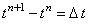
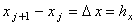
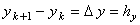
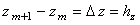
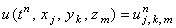
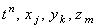
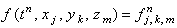

|
Запишем трёхмерное дифференциальное уравнение параболического типа, не содержащее первых производных по координатам x, y и z, в следующем общем виде:
Пусть для независимых переменных заданы следующие интервалы их изменения:
n - порядковый номер точки деления по оси t; j - порядковый номер точки деления по оси x; k - порядковый номер точки деления по оси y; m - порядковый номер точки деления по оси z;  - величина интервала между точками по оси t;  - величина интервала между точками по оси x;  - величина интервала между точками по оси y;  - величина интервала между точками по оси z;  - значение функции u, соответствующее точкам ;  - значение функции f, соответствующее точкам . Введём нумерацию точек разностной сетки по каждой из осей следующим образом: по оси t - n = 0, 1, 2, ..., M; по оси x - j = 1, 2, 3, ..., Nx; по оси y - k = 1, 2, 3, ..., Ny; по оси z - m = 1, 2, 3, ..., Nz. Тогда значения переменных t, x, y и z в точках разностной сетки будут определяться согласно следующему правилу:
|